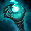
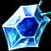

Picking a Champion
A lot of thought needs to go into picking your character. You need to be thinking about things such as team composition, the enemy champion you will be laning against, as well as your personal comfort level with playing a champion. For this page, I'll list three good intro characters for Beginner and Intermediate playstyles. I'll also list pros and cons to each character, as well as a general guide to playing them. This is by no means a complete list of the only champions who can play mid lane. It is meant to be a list that gets you looking at relatively easier characters to play, with abilities that help you learn the mechanics of the game. Let's start with the Beginner mid-lane champions.
| Champion | Pros | Cons | |
 |
Annie - The Dark Child |
|
|
 |
Fiddlesticks - The Harbinger of Doom |
|
|
 |
Ryze - The Rogue Mage |
|
|
Annie - The Dark Child
About Annie
Annie is a very easy character to pick up and play. Her moves are fairly straight forward and friendly to newer players. One of the positive things about Annie is that her mechanics involve the player managing her passive stun stacks, as well as forcing them to focus on last hitting minions with her Q ability so to maximize the mana refund. Plus, you get to summon a massive flaming bear to fight alongside you, so how cool is that!
Abilities
Passive: Pyromania - After casting 4 spells, Annie's next offensive spell will stun the target. Using
this ability will make or break Annie players. Having an on command stun is an amazing ability for a passive
and can set up your team for many opportunity. Annie's character model will have a red flame surrounding
her when her stun is up. Make sure you land your next ability on an enemy champion, so you can follow it
up with some more damage =D.
Q: Disintegrate - Annie throws a fireball, dealing damage and refunding the mana cost if it destroys the target.
Great Annie players will know to use this ability to last hit minions to make the most of the mana refund mechanic.
This move is great because it forces players to last hit, which is a nifty skill to hone early.
W: Incinerate - Annie burns enemies in a cone of fire in front of her. This skill does great damage in a small cone
in front of Annie. This combines with her passive to stun more than one target.
E: Molten Shield - Annie covers herself with a shield increasing her Armor and Magic Resist. She also burns
enemies who attack with basic attacks. A pretty powerful defensive shield that needs to be activated whenever
you are thinking of of running into someone's attack range. It's a great set up to use your passive. When you have
3 stacks of Pyromania, use your Molten Shield to prep the stun. This is what makes her stun on command.
R: Summon: Tibbers - Annie's stuffed animal Tibbers comes to life, dealing damage to all enemies in the area.
You summon a big burning bear! What more could you possibly want?! Tibbers does massive damage to everyone in his
summoned area, and continues to deal damage to enemies around him. This combines with Annie's passive to stun multiple
targets.
Items
 Doran's ring grants 15 AP, 60 Health, 3 Mana Regen per 5 seconds and has a passive effect of restoring 4 mana when an
enemy is killed. Start with this item and some health potions. It's easy to see why this item is so good on Annie, since
it gives a decent amount of stats and synergizes well with her Q move.
Doran's ring grants 15 AP, 60 Health, 3 Mana Regen per 5 seconds and has a passive effect of restoring 4 mana when an
enemy is killed. Start with this item and some health potions. It's easy to see why this item is so good on Annie, since
it gives a decent amount of stats and synergizes well with her Q move.
 Liandry's Torment grants 50 AP, 300 Health, and has two passive abilities. The first passive is a +15 to magic penetration
and the second passive applies a damage-over-time effect on the target, whenever you damage them with a spell. It does double
damaga on targets who have their movement impaired, and stuns count. Since Annie deals primarily spell damage and has
the on command stun, this works very well with her.
Liandry's Torment grants 50 AP, 300 Health, and has two passive abilities. The first passive is a +15 to magic penetration
and the second passive applies a damage-over-time effect on the target, whenever you damage them with a spell. It does double
damaga on targets who have their movement impaired, and stuns count. Since Annie deals primarily spell damage and has
the on command stun, this works very well with her.
 Deathfire Grasp is an advanced item which grants 120 AP, 10% Cooldown Reduction, and has a unique Active ability. The ability deals a large amount of magic damage to the target, and applies a debuff which causes the target to take even more magic damage. This ability is what makes the item advanced. If you remember to use it, you'll see a dramatic increase in your damage and production. Back to top
{kind=link}
Fiddlesticks - The Harbinger of Doom
About Fiddlesticks
What makes Fiddlesticks so easy to use is that he offers newer players a lot crowd control, coupled with a good source of healing. He is able to fear and silence a target, which renders them relatively ineffective. In addition to that, he has a potent healing move that allows him to stay in lane for a bit longer, so long as you have the mana. His ultimate, Crowstorm, is a high damage move that can completely disrupt a teamfight in your favor. It also allows for you to hide in a bush somewhere, teleport in and surprise the enemy team while doing crazy damage! It's also very satisfying to do in a teamfight and pick up a penta-kill =D
Abilities
Passive: Dread - Enemies within a certain range of Fiddlesticks have their magic resistance reduced by 10.
This passive is kind of a double edged sword. It's nice to have the enemy's resistance lowered, however it alerts them
to your presence. Whenever you are in range, they enemy will see a debuff on their screen that shows the lowered resistance.
So, you get to do extra damage because of it, but they know you're sneaking around the brush somewhere -_-.
Q: Terrify - Fiddlesticks fears a target, preventing them from taking any actions and causes them to move randomly
at a slowed pace. This CC effect is awesome, but can sometimes backfire. The fear effect and slowed speed are both useful
however, the downside is the random path the enemy moves. Sometimes the fear sends them in the direction you want, other
times it can send them right into their own teammates. More often then not it works out in your favor, you just need to
be aware that it isn't 100% of the time.
W: Drain - Fiddlesticks creates a leash on a target, channels for 5 seconds and heals for the duration while doing damage.
This is his sustain drain that heals for a pretty decent amount. Use it when you're low on health, and immediately after you
fear an enemy. The slow speed from the Terrify allows them to stay in range of your leash for longer. Use it in combo with
Dark Wind or Crowstorm to really crush your opponent's spirit =D=D=D !
E: Dark Wind - Fiddlesticks throws a crow that bounces to enemy units up to 4 times. Each bounce deals magic damage
and silences the enemy. This ability is awesome and does some pretty significant damage since it can hit the same target
multiple times. You usually want to start your combo with this move, since the silence can effect multiple enemies and
prevent them from interrupting the rest of your combo.
R: Crowstorm - After channeling for a short while, Fiddlesticks teleports to a target location, surrounded by crows
that deal massive damage to enemies in a circle around Fiddle. This move does so much insane damage that it is ridiculous.
Use this from the brush to teleport into a teamfight and completely wreck havoc on everyone. Since you end up doing so much
damage, they'll either need to focus you down or run out of the Crowstorm. Either way, they'll usually be easy pickings for
you and your team as long as you follow up with your combos =)
Items
Doran's ring grants 15 AP, 60 Health, 3 Mana Regen per 5 seconds and has a passive effect of restoring 4 mana when an
enemy is killed. Start with this item and some mana potions, since you can use Fiddle's W to regain health. With this much mana
regen and health regen, you should rarely have to leave the lane if you're playing smart.
 Zhonya's Hourglass grants 120 AP, 50 Armor, and an amazing active ability. If you activate the item, it puts your champion into
a stasis, where he becomes invulnerable to damage and untargetable by spells. The best thing is, that activating this does not
stop Crowstorm. This item needs to be rushed on Fiddle ASAP. Once you have this, your Crowstorm becomes that much more devastating,
since you can activate this item and become invulnerable.
Zhonya's Hourglass grants 120 AP, 50 Armor, and an amazing active ability. If you activate the item, it puts your champion into
a stasis, where he becomes invulnerable to damage and untargetable by spells. The best thing is, that activating this does not
stop Crowstorm. This item needs to be rushed on Fiddle ASAP. Once you have this, your Crowstorm becomes that much more devastating,
since you can activate this item and become invulnerable.
Again we see Deathfire Grasp. Deathfire Grasp is an advanced item which grants 120 AP, 10% Cooldown Reduction, and has a unique Active ability. The ability deals a large amount of magic damage to the target, and applies a debuff which causes the target to take even more magic damage. This item works well with casters, since it enables them to use abilities often and allows them to hit even harder. Back to top
Ryze - The Rogue Mage
About Ryze
Ryze is a new player friendly champion, in that his abilities are straightforward and simple to use, and that due to the items that he builds, he ends up fairly tank-y. That's because his spells gain bonus damage from mana, which means that he doesn't need to build items that give him AP. There are a decent amount of items that give mana, in conjuction with defensive states like Health and Armor, so he becomes fairly tough to kill. Also his passive really fuels the spell flinging playstyle that is Ryze's.
Abilities
Passive: Arcane Mastery - When Ryze casts a spell, all of his other spells have their cooldowns lowered by 1 second.
This in combination with his Q allow for some quick spell flinging.
Q: Overload - Passively it grants free Cooldown Reduction. When you use it, it fires an electric bolt at an enemy unit,
that deals some decent damage. The cooldown on this ability is 3.5 seconds, meaning when you start using your other spells to
follow up this one, it becomes nearly spammable thanks to Ryze's passive. A good combo to get some nice damage in, is to start
with Q, stun with W, use your E and follow up with another Q. Q-W-E-Q = 'splosion. Throw in the R for even more damage.
W: Rune Prison - Ryze traps an enemy in a prison, rooting them in place for a short time. Not much to say about this.
It's a great defensive and offensive move. If you see their jungler coming to gank you, you can stun him and move to safety.
Ryze players definitely need to make use of this move, as Ryze is a slow character normally.
E: Spell Flux - Ryze fires an orb of energy that bounces between enemy units or himself, up to 5 times. Against enemies,
each bounce does damage and lowers their magic resistance by a static amount. Ryze does not take damage or magic resistance
reduction when the orb bounces off him. This move does some great damage when it bounces off the same enemy, or in a teamfight
where it bounces through the entire enemy team. This move, combined with his ultimate makes for some serious AoE damage.
R: Desperate Power - Ryze supercharges himself with energy, gaining spell vamp, movement speed, and causing his spells
do to extra damage to enemies around their original targets. This move makes Ryze into an AoE damage machine. This with his E
and his naturally low cooldowns will have you pretty much nuking the entire enemy team. Use this before every teamfight and
spam spells at will.
Items
 Sapphire Crystal increases your maximum mana by 200. Since Ryze's abilities scale off of mana more than AP, you're better off starting with this item and some health potions. Play carefully and defensively until you gain some levels and items.
{kind=link}
Tear of the Goddess grants 250 mana, 7 mana regeneration and a unive passive. The passive is called Mana Charge, and makes it so that when you cast a spell, you increase your maximum mana by 4, up to a maximum of 750. It's clear to see why this item is so useful on Ryze, and needs to be rushed right away. Turn your Sapphire Crystal into this as soon as you get enough money too, so that you can start building those stacks. Once you get enough gold, you can turn the item into Archangel's Staff, which grants even more mana and regeneration in addition to some AP.
{kind=link}
 Frozen heart grants 95 armor, 400 mana, and 20% cooldown reduction. In addition, it also has a passive aura that reduces the
attack speed of nearby enemy champions. This is one of the major items that makes Ryze a tank-y mage, in that it grants him so
much armor and cooldown reduction. With this item and his passive from his Q, he comes very close to reaching the 40% cooldown
reduction cap without anything else. Awesomesauce.
Frozen heart grants 95 armor, 400 mana, and 20% cooldown reduction. In addition, it also has a passive aura that reduces the
attack speed of nearby enemy champions. This is one of the major items that makes Ryze a tank-y mage, in that it grants him so
much armor and cooldown reduction. With this item and his passive from his Q, he comes very close to reaching the 40% cooldown
reduction cap without anything else. Awesomesauce.
Back to top
As previously stated, these are not the only champs that are friendly toward starting players, nor are these the only items you should buy. This is just a starting point for you to branch out and discover your own champions to play and items to build. Hopefully once you've played a few games and gotten some experience under your belt, you'll master the mechanics of the game and be able to tackle some of the more Intermediate Champions in the game.